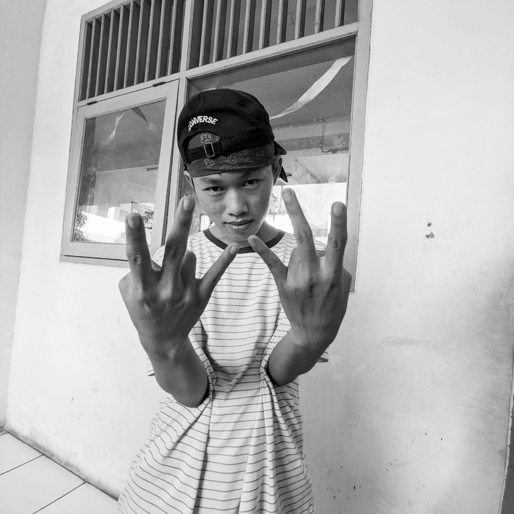

biodata
Umur: 16 tahun
Hobi: Membaca, Menulis, dan Bersepeda
Alamat: rajeg mulya reciden tahap 2
Telpon:085779877290
Aqso adalah anak pertama dari dua bersaudara. Adiknya, Noval Arseneo Riawan, atau yang lebih akrab dipanggil Neo, sudah duduk di bangku SD. Neo adalah tipe orang yang aktif dan lebih suka menghabiskan waktu di luar rumah, bermain dengan teman-temannya. Penuh energi, Neo juga selalu penuh rasa ingin tahu, sering bertanya tentang segala hal, yang terkadang membuat Aqso kewalahan.
Mereka tinggal bersama Ayah dan Ibu di sebuah rumah kecil di pinggiran kota, dikelilingi pohon cemara yang menjulang tinggi. Ayah bekerja sebagai karyawan swasta, sementara Ibu membuka warung kecil di depan rumah. Hidup mereka sederhana.
Hari itu, hujan turun sejak pagi. Aqso baru pulang dari sekolah dengan sepatu yang basah kuyup, dan kertas PR-nya sedikit lembab. Ia duduk di teras sambil memandangi Nisa, adiknya yang kecil, bermain lompat-lompatan di genangan air, tertawa lepas meski bajunya kotor. Neo muncul dari balik pintu, menatap adiknya sebentar, lalu ikut duduk di sebelah Aqso.
Aqso tertawa pelan. “Kalau dilarang, dia malah makin semangat.”
Neo hanya mengangguk, lalu terdiam sejenak. Hujan masih turun, menimbulkan suara ritmis di atap seng yang membuat suasana terasa damai.
“Aqso,” kata Neo tiba-tiba, “kamu pernah nggak ngerasa capek sama semua ini?”
Aqso menoleh, menatap kakaknya yang jarang berbicara tentang perasaannya. “Capek kenapa?”
“Ya, hidup kita. Nggak semudah orang lain. Teman-teman di sekolah punya ponsel baru, bisa les ini itu. Aku... kadang iri.”
Aqso terdiam sejenak, memikirkan kata-kata Neo. Ia mengerti perasaan itu. Kadang, saat melihat teman-temannya di sekolah bercerita tentang liburan keluarga ke tempat-tempat indah, Aqso merasa ada sesuatu yang hilang. Tapi kemudian ia ingat sesuatu yang lebih penting.
“Kamu tahu, Kak,” kata Aqso pelan, “memang kita nggak punya banyak. Tapi kita punya hal yang orang lain mungkin nggak punya.”